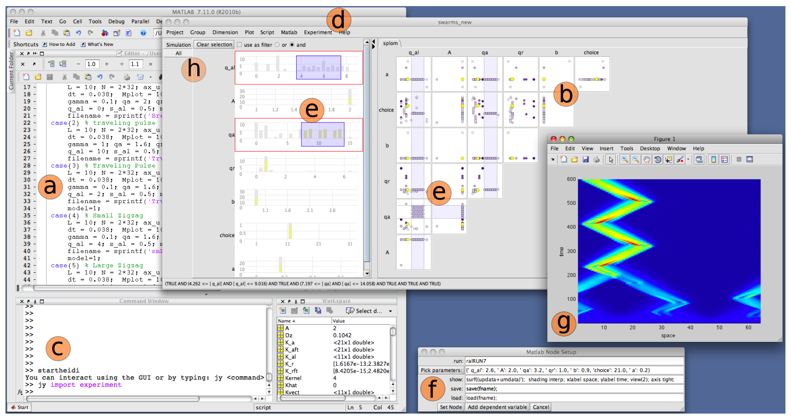

ParaGlide: Interactive Parameter Space Partitioning for Computer Simulations

Authors. Steven Bergner, Michael Sedlmair, Sareh Nabi Abdolyousefi, Ahmed Saad, Torsten Möller
Venue. arXiv (2011) Technical Report
Type. Technical Report
Materials.
DOI
Abstract. In this paper we introduce paraglide, a visualization system designed for interactive exploration of parameter spaces of multi-variate simulation models. To get the right parameter configuration, model developers frequently have to go back and forth between setting parameters and qualitatively judging the outcomes of their model. During this process, they build up a grounded understanding of the parameter effects in order to pick the right setting. Current state-of-the-art tools and practices, however, fail to provide a systematic way of exploring these parameter spaces, making informed decisions about parameter settings a tedious and workload-intensive task. Paraglide endeavors to overcome this shortcoming by assisting the sampling of the parameter space and the discovery of qualitatively different model outcomes. This results in a decomposition of the model parameter space into regions of distinct behaviour. We developed paraglide in close collaboration with experts from three different domains, who all were involved in developing new models for their domain. We first analyzed current practices of six domain experts and derived a set of design requirements, then engaged in a longitudinal user-centered design process, and finally conducted three in-depth case studies underlining the usefulness of our approach.